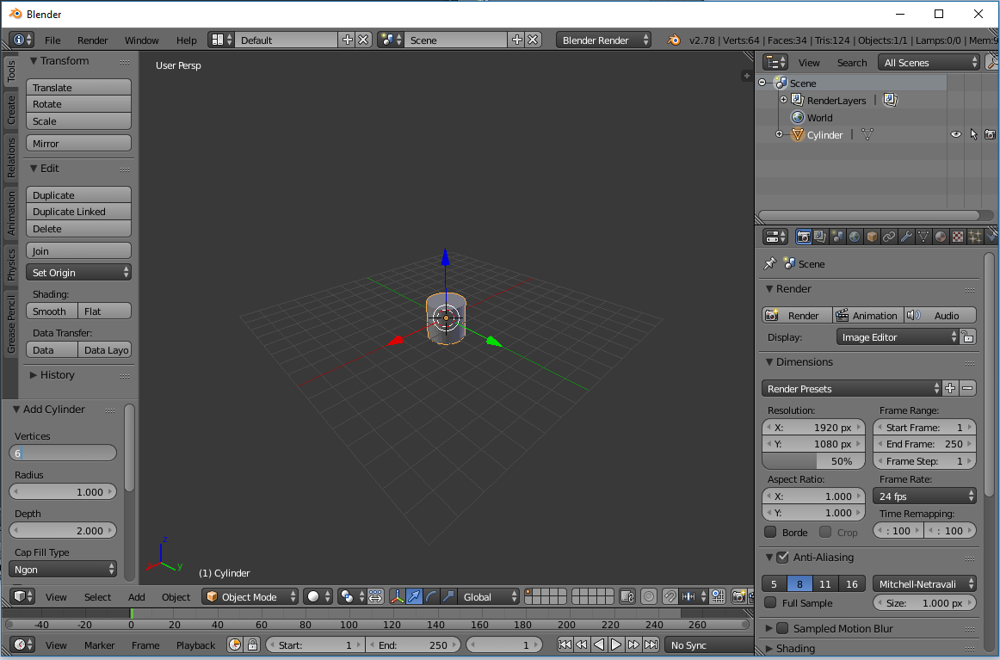

This is the default scene when you open Blender for the first time. It has a cube, a camera and a lamp.
Some informative text here.
Some informative text here.
Set the number to of vertices to '6'
Press the 'S' key to enter scaling mode, then press 'Z' to lock scaling to the Z-axis, then press '3' to scale by 3 units
Press 'Ctrl+R' to enter edge-looping mode, do not click again. scroll the mouse wheel until u have x dividsions. this is a ruff draft.

If you left click you will the loop divisions moving freely following your cursor, you can move them, but right click to center them
When you right-click in edge-looping mode it will auto center your loops
Switch back to object mode, then press 'Z' to view the mesh in wireframe mode.
I'm going to go over these images in Photoshop to add arrows or indicators